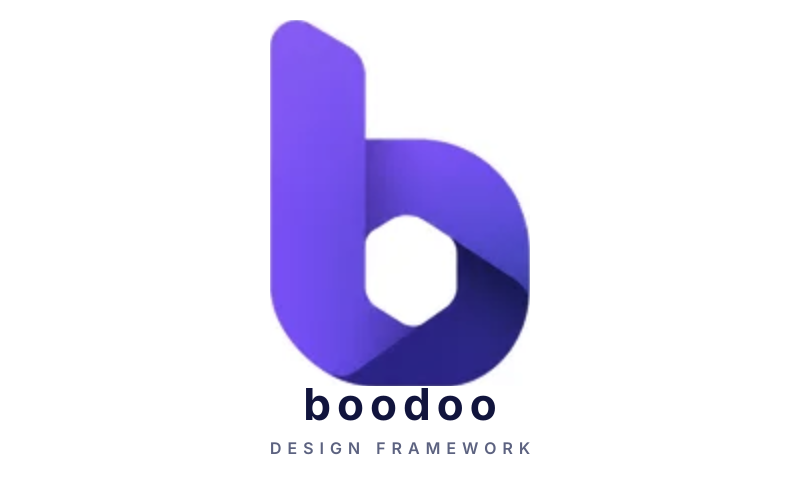
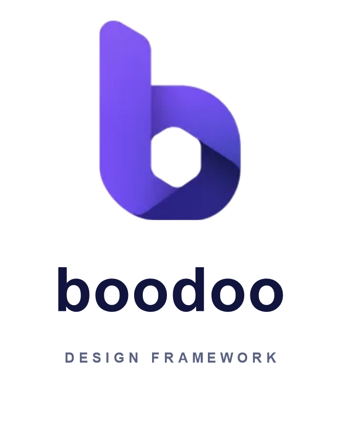
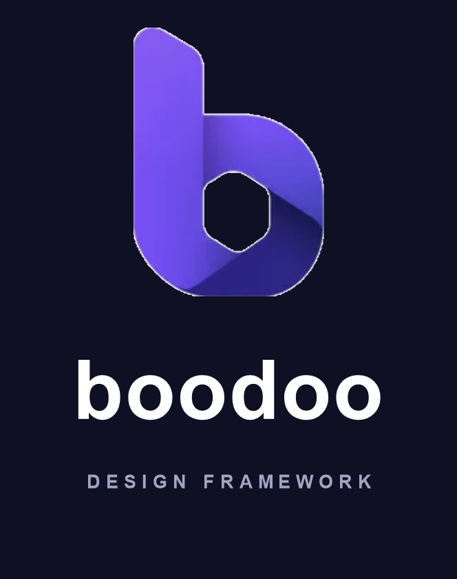
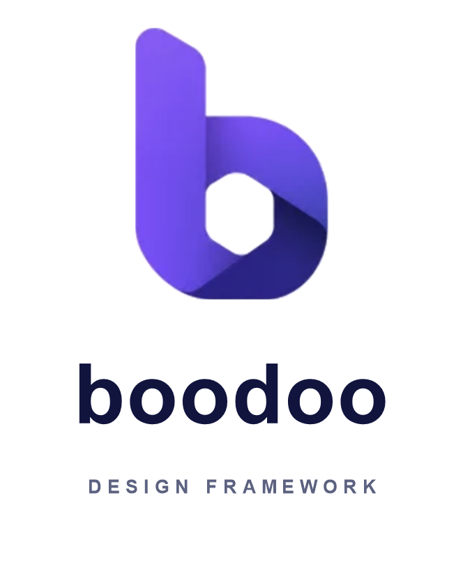

Vector Icon (SVG) · boodoo-icon.svg
Dark Surface (PNG) · boodoo-icon-dark.png
The official boodoo brand assets: the logo lockup, the abstract icon, color tokens, and usage guidelines.
All assets live in boodoo-brand-assets/ and are also mirrored in this documentation site.
Use the full lockup for websites, documentation, presentations, and marketing. It combines the abstract icon, the "boodoo" wordmark, and the "DESIGN FRAMEWORK" tagline.

Vector Lockup (SVG) · boodoo-logo.svg

Light Background (PNG) · boodoo-logo-primary.png

Dark Surface (PNG) · boodoo-logo-primary-dark.png

Transparent Lockup (PNG) · boodoo-logo-primary-transparent.png
<img src="../../assets/brand/boodoo-logo.svg" alt="boodoo logo lockup" class="img-fluid brand-logo-preview">
<img src="../../assets/brand/boodoo-logo-primary-dark.png" alt="boodoo logo dark" class="img-fluid brand-logo-preview">The abstract "b" icon works alone for favicons, app icons, package avatars, GitHub avatars, and compact navigation. It's available as SVG and PNG from 16px to 512px.
Vector Icon (SVG) · boodoo-icon.svg
Dark Surface (PNG) · boodoo-icon-dark.png
<img src="../../assets/brand/boodoo-icon.svg" alt="boodoo icon" width="96" height="96">
<img src="../../assets/brand/boodoo-icon-32.png" alt="32px icon" width="32" height="32">
<img src="../../assets/brand/boodoo-icon-512.png" alt="512px icon" width="128" height="128">These tokens map to the framework's theme: --boodoo-primary: #7c3aed,
--boodoo-secondary: #5b21e6, --boodoo-dark: #17135f, and the grays are derived from
#11143d/#5c6280.
boodoo-banner.png (1600×400) · boodoo-og-image.png (1200×630, used for Open Graph / social previews)
<img src="../../assets/brand/boodoo-banner.png" alt="boodoo banner" class="img-fluid rounded">
<p class="text-muted small mt-2 mb-0">boodoo-banner.png (1600×400) · boodoo-og-image.png (1200×630, used for Open Graph /
social previews)</p>
Inter, ui-sans-serif, system-ui, -apple-system, BlinkMacSystemFont, "Segoe UI", sans-serif (which boodoo
uses by default).| File | Description |
|---|---|
boodoo-logo.svg / boodoo-logo-primary*.png |
Logo lockup (vector / white / transparent / dark) |
boodoo-icon.svg / boodoo-icon*.png |
Icon-only mark (SVG + 16–512px PNG, dark & transparent variants) |
boodoo-banner.png |
1600×400 brand banner |
boodoo-og-image.png |
1200×630 Open Graph / social preview |